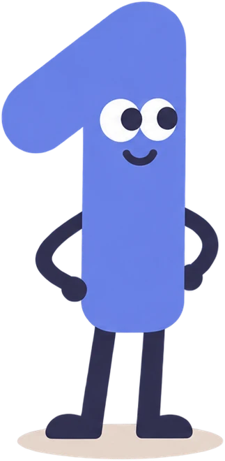
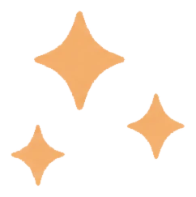

jobA1
Moins chercher
plus vivre.
jobA1 trie les offres, prépare tes lettres et tient ton suivi ORP. En 3 étapes, on règle tout.
Tout réécrire
Ton CV suffit.
jobA1 en tire tes compétences pour noter chaque offre.
Importer mon CV
PDF ou Word, 10 Mo maximum
CV_Kevin_DiNocera.pdfImporté et analysé
Compétences trouvées
Kubernetes
Terraform
GitLab CI
Azure
Ansible
Python

Ton CV reste privé. [Préciser ici l'usage réel des données.]
Toutes les offres
Juste les tiennes.
Pré-rempli depuis ton CV. Modifiable à tout moment dans Compte.
Je suis inscrit à l'ORPActive le suivi de tes recherches
Recherches par mois
Lire 312 offres
En trier 3.
3 offres trouvées d'après ton CV et tes critères. Garde ou écarte, jobA1 apprend de tes choix.
{{c.ini}}
{{c.title}}{{c.co}}
D'après ton CV : {{c.why}}
{{cardLabel}}
